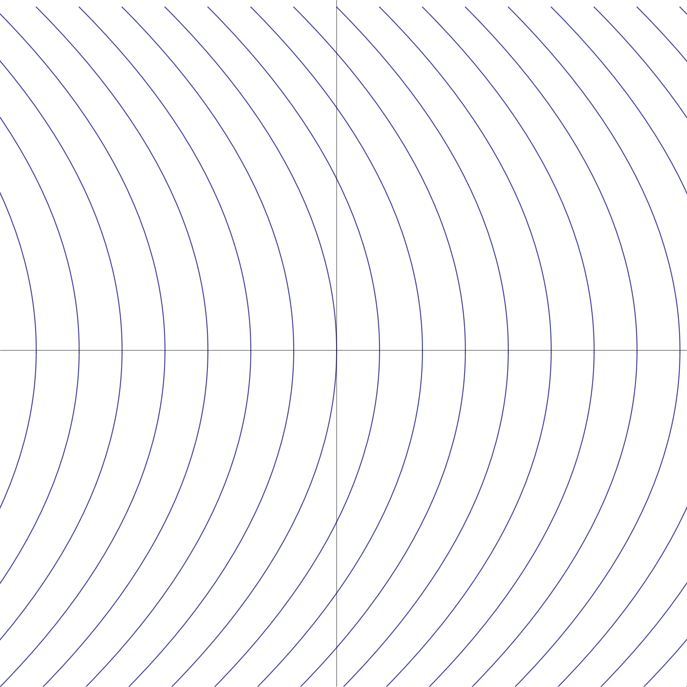
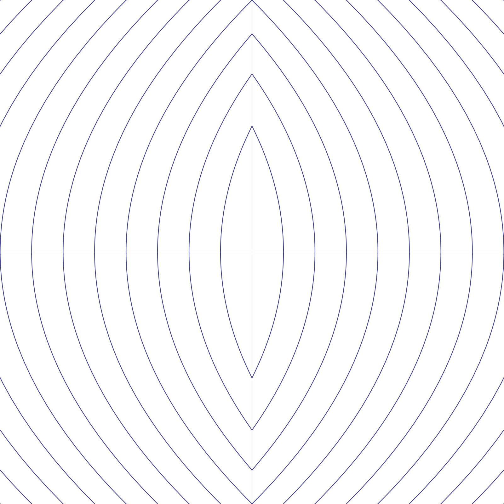

An obvious idea to try is to switch the electromagnet on when $x<0$ and off when $x>0$. That is, we try the control rule $u=-\operatorname{sgn}(x)$ (where $\operatorname{sgn}(x)=x/|x|$ is the signum function), leading to the equation of motion
This can be represented in the usual way as a planar system of first-order ODEs, namely
It is not hard to see how to draw the phase portrait for this system. First, imagine that there is no electromagnet, which leads to the simpler system (describing simply the motion of a particle under a uniform gravitational force)
The solutions of this equation take the form
where $x_0$ is the initial position and $y_0$ is the initial velocity. We then have that $y=y_0-t$, and therefore
in other words, the solution curves of the system have the form $x=a-\tfrac12 y^2$ where $a$ is some arbitrary parameter. This leads to the phase portrait shown in Figure 14.

Next, the system (43) consists of modifying the equation vector field by reflecting the flow curves for negative $x$ so that they mirror the lines for positive $x$. This leads to the phase portrait in Figure 15. We see that the system indeed has a rest point at $(x,y)=(0,0)$. However, the rest point is a center, i.e., it is only neutrally stable (this is to be expected, since in fact this is an autonomous Hamiltonian system arising from a potential energy $U(x)=|x|$, and we know energy is conserved in such systems, leading to periodic oscillatory motions). So, a particle moving according to these equations of motion will indeed levitate, but will do so in a way that oscillates around the reference point $x=0$, and only under the unrealistic assumption that the physical system is indeed described to perfect precision by the equations (43). In practice, due to the finite speed of response of the switching control, any physical implementation of this control rule will be unstable.
